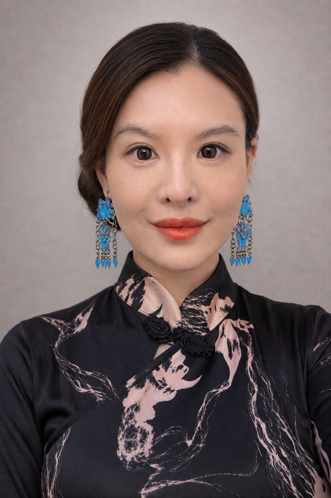

The Story Behind The Artisan Jen

Jen is the hands and heart behind these pieces — devoted to reviving the endangered Chinese arts of dian cui featherwork, cloisonné enamel, and mother-of-pearl inlay, and sharing them through hands-on workshops across Seattle & Everett.